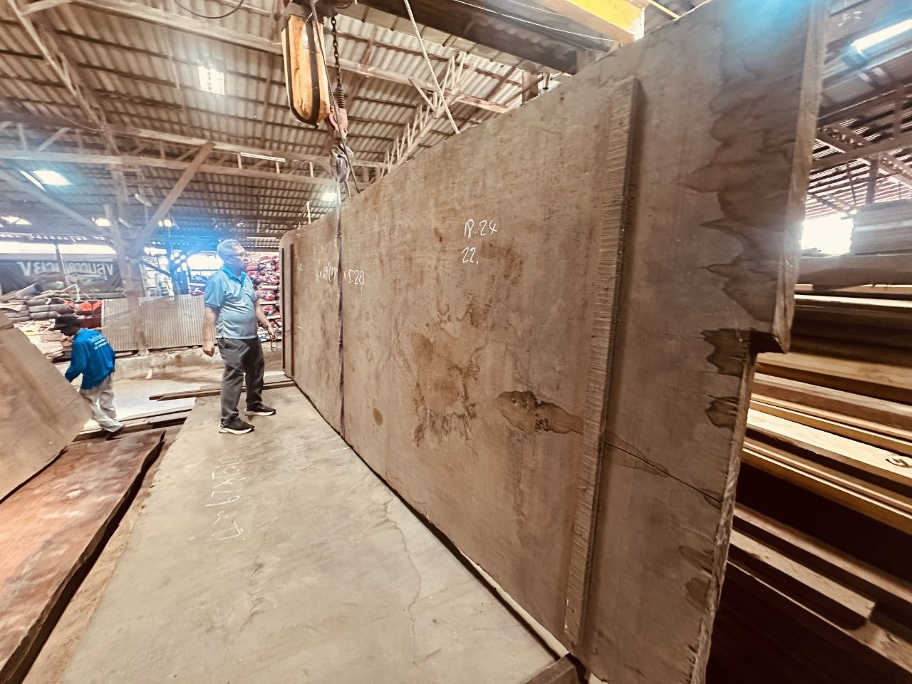
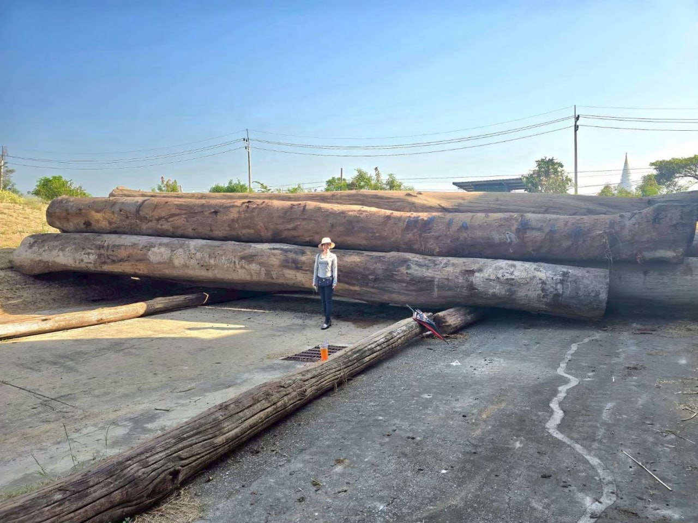
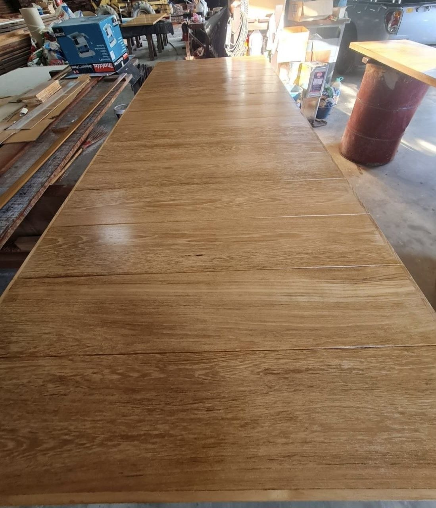

คลังไม้แปรรูปคุณภาพสูง และสินค้าพิเศษ พร้อมตอบสนองความต้องการของลูกค้าในทุกรูปแบบ

แผ่นไม้อายุยาวนานที่เลื่อยจากท่อนซุงขนาดใหญ่พิเศษ เก็บรักษาขอบไม้ตามธรรมชาติ (Live-edge) เหมาะสำหรับงานทำหน้าท็อปโต๊ะอาหาร โต๊ะประชุม หรือเคาน์เตอร์ยาว เรามีสต็อกไม้แผ่นใหญ่หลากหลายมิติพร้อมให้คุณเลือกสรร

ไม้โครงสร้างหน้าตัดขนาดใหญ่สามารถแปรรูปได้ตามขนาดที่ต้องการ ทนทาน รองรับน้ำหนักได้ดีเยี่ยม เหมาะสำหรับโครงสร้างบ้าน ไม้เสาคานและงานวิศวกรรมทางน้ำ

สักทองลายธรรมชาติสำหรับการตกแต่งภายใน ตีร่องหรือเซาะร่องได้อย่างแม่นยำ ผ่านกระบวนการอบไม้และผึ่งลมเพื่อความเสถียรสูงสุด ไม่บิดโก่งเมื่อติดตั้ง
High-End Finishing
เหมาะสำหรับงานตกแต่งระดับไฮเอนด์ที่เน้นความเนียนละเอียดของผิวสัมผัส